作品集 / germany
德国。
旧城的街道与河畔从白昼走向夜晚。
← 全部系列13 PHOTOGRAPHS

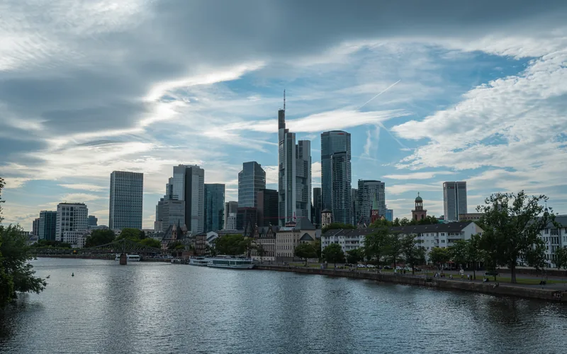
ISO 64 · 1/250 秒 · f/8 · 34.5 mm
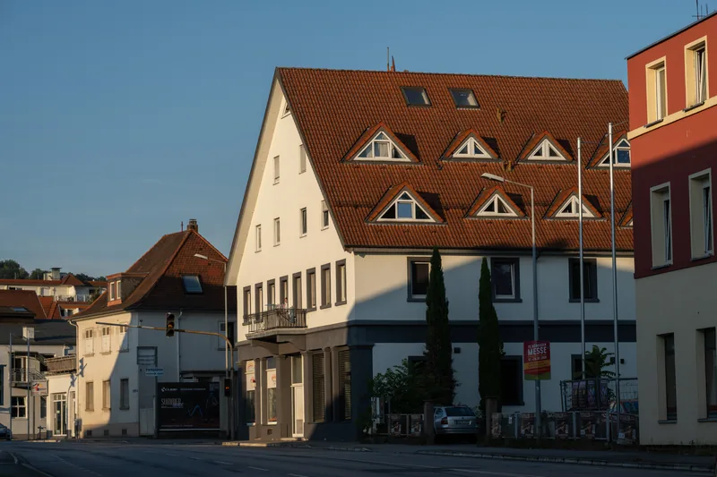
ISO 64 · 1/125 秒 · f/8 · 83 mm
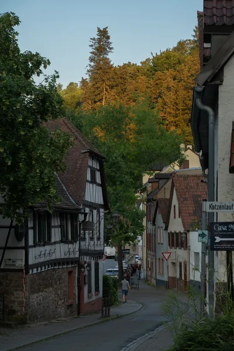
ISO 560 · 1/125 秒 · f/8 · 101 mm
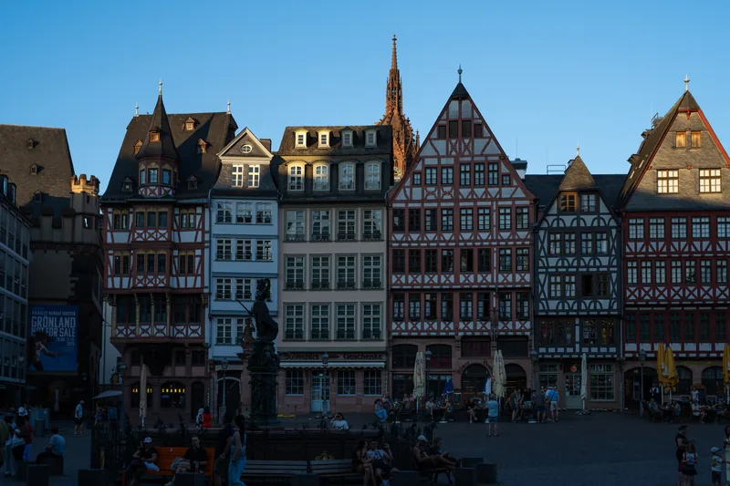
ISO 64 · 1/80 秒 · f/8 · 44 mm
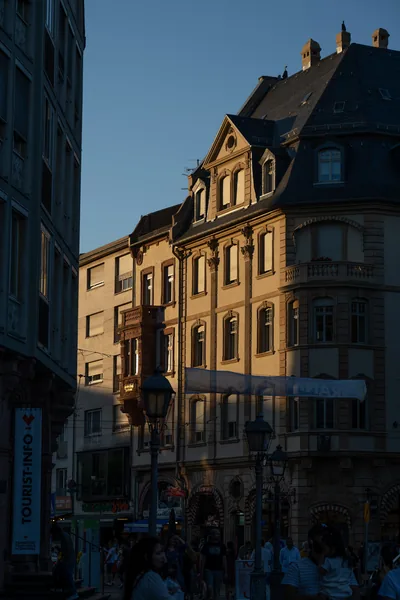
ISO 64 · 1/160 秒 · f/8 · 91 mm
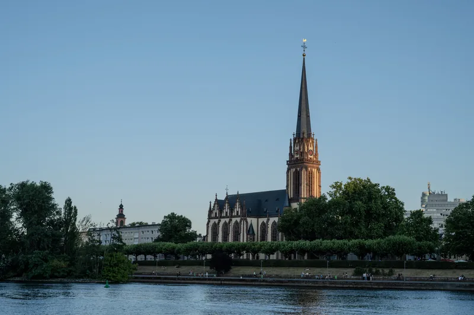
ISO 64 · 1/60 秒 · f/8 · 52 mm
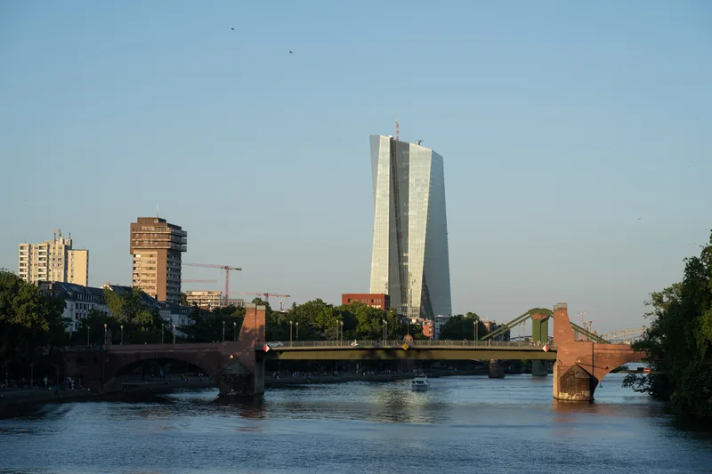
ISO 64 · 1/100 秒 · f/8 · 87 mm
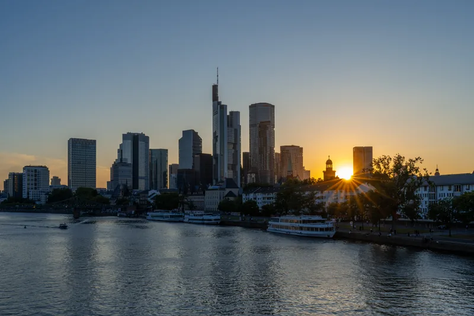
ISO 64 · 1/40 秒 · f/14 · 34.5 mm
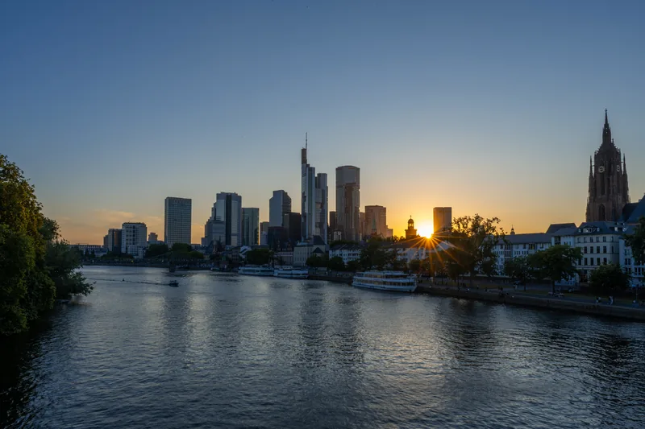
ISO 64 · 1/25 秒 · f/16 · 24 mm
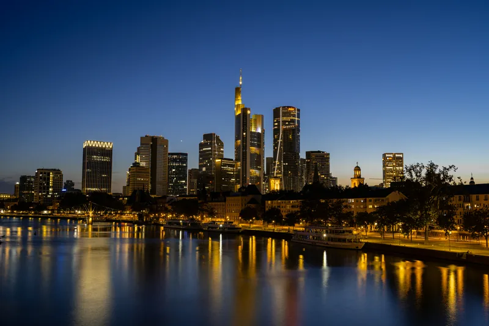
ISO 64 · 20 秒 · f/8 · 36 mm
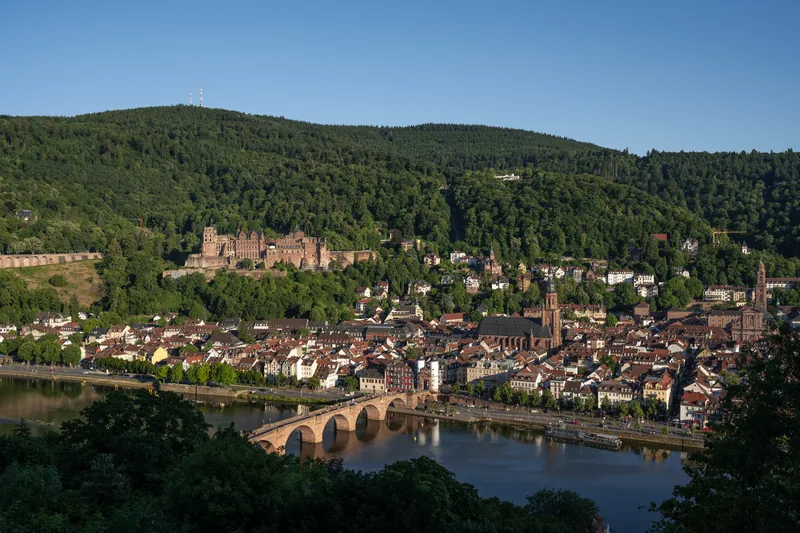
ISO 64 · 1/125 秒 · f/8 · 34.5 mm
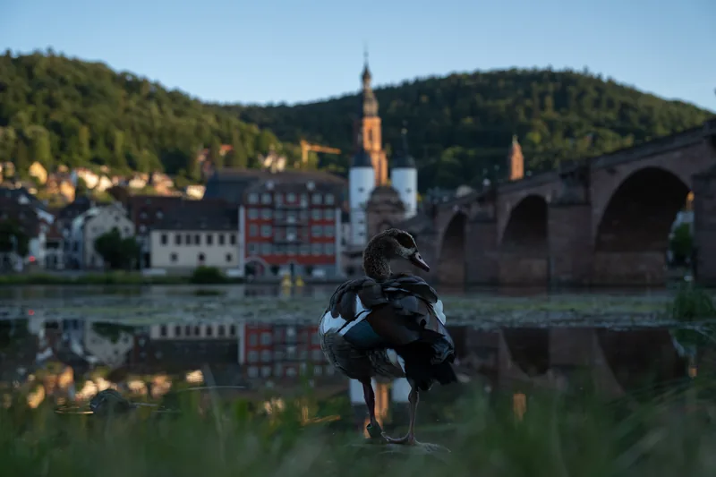
ISO 400 · 1/640 秒 · f/4 · 47 mm
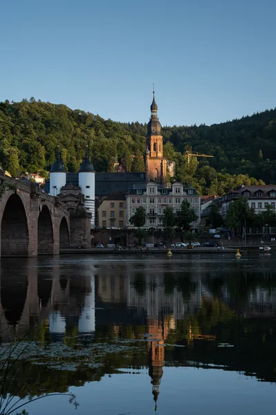
ISO 125 · 1/60 秒 · f/7.1 · 53 mm